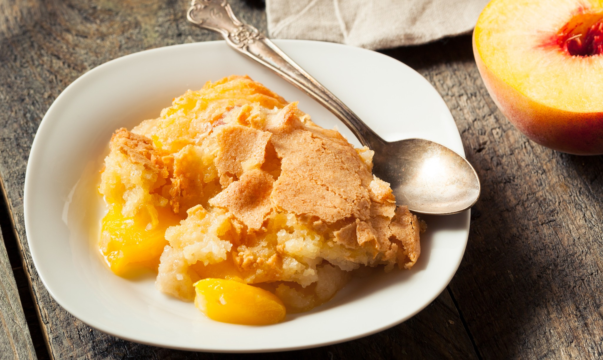

Recipe List
Peach Cobbler

Description
This southern classic made from scratch tastes the best when using fresh peaches, served warm with a scoop of vanilla ice cream.
Ingredients
- 8 fresh peaches- peeled, pitted and sliced into thin wedges
- 1/2 cup + 3 tablespoons white sugar
- 1/2 cup brown sugar
- 1 1/4 teaspoon ground cinnamon
- 1/8 teaspoon ground nutmeg
- 1 teaspoon fresh lemon juice
- 2 teaspoons cornstarch
- 1 cup all-purpose flour
- 1 teaspoon baking powder
- 1/2 teaspoon salt
- 6 tablespoons unsalted butter, chilled and cut into small pieces
- 1/4 cup boiling water
Steps
- Preheat the oven to 425 degrees F (220 degrees C)
- Combine peaches, 1/4 cup white sugar, 1/4 brown sugar, 1/4 teaspoon cinnamon, 1/8 teaspoon nutmeg, 1 teaspoon fresh lemon juice, and 2 teaspoons cornstarch in a large bowl; toss to coat evenly, and pour into a 2-quart baking dish. Bake in preheated oven for 10 minutes.
- Combine 1/4 cup white sugar, 1/4 cup brown sugar, 1 teaspoon baking powder, and 1/2 teaspoon salt in a large bowl. Blend in 6 tablespoons of chilled and cubed unsalted butter with fingertips or a pastry blender until mixture resembles coarse meal. Stir in 1/4 cup boiling water until just combined.
- Remove peaches from oven, and drop spoonfuls of topping over them.
- Mix 3 tablespoons white sugar and 1 teaspoon cinnamon together in a small bowl; sprinkle over entire cobbler.
- Bake in the preheated oven until topping is golden, about 30 minutes.
Top of page